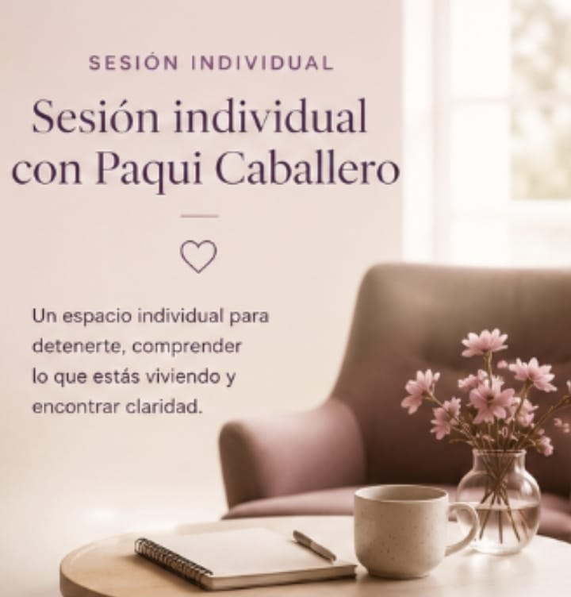
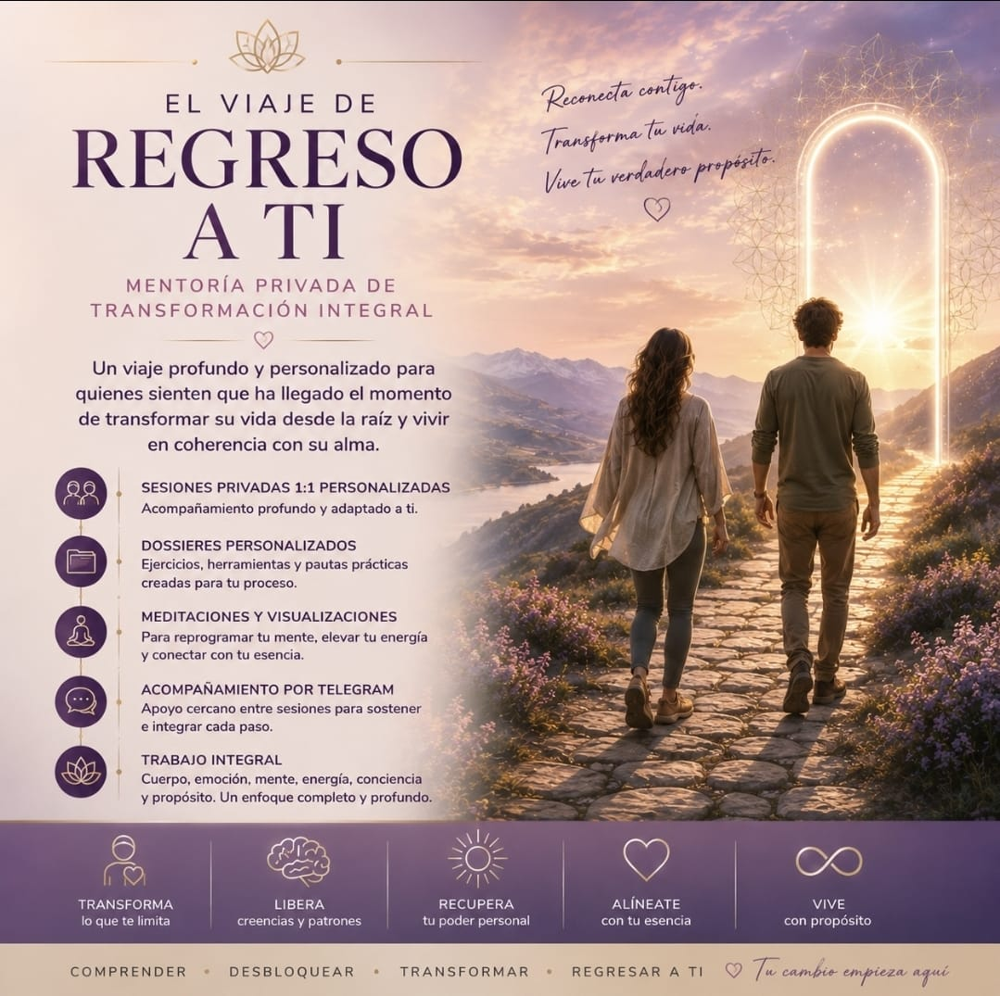

Escuchamos lo que tu vida te está mostrando
Miramos con calma lo que hoy duele, pesa o confunde, sin juicio y sin prisa, para comprender qué te está queriendo decir tu proceso.
Una mirada amorosa para tu proceso
Hay momentos en la vida en los que algo dentro de ti pide parar, comprender y volver a casa. Si sientes que te has perdido, que repites dolor o que tu alma te está llamando a un cambio, te acompaño a escuchar ese proceso con amor, verdad y profundidad.
Muchas personas llegan así: sosteniendo demasiado, atendiendo a todo el mundo, sobreviviendo en silencio y sin saber cómo volver a sentir paz.
Desde ahí empiezan a aparecer respuestas, descanso interior y una forma nueva de atravesar lo que estás viviendo.
Un momento para escucharte
A veces basta con parar, mirar lo que estás viviendo con honestidad y darte un espacio donde recuperar calma, claridad y presencia.
Quiero empezar con una mentoríaMétodo
Miramos con calma lo que hoy duele, pesa o confunde, sin juicio y sin prisa, para comprender qué te está queriendo decir tu proceso.
Vemos con claridad qué memorias, vínculos, creencias o bloqueos están sosteniendo lo que se repite en tu camino.
Trabajamos desde un enfoque integrativo para ayudarte a soltar, comprender y reconectar con la verdad más profunda de tu ser.
No se trata solo de entender. Se trata de recordar quién eres, sentir más paz y poder dar tu siguiente paso con coherencia interior.
Cómo puedes empezar
A veces el primer paso es leer. Otras veces necesitas una conversación más íntima, una pausa profunda o un espacio para seguir aprendiendo. La idea es que puedas acercarte desde donde hoy estás.
Una lectura para acompañarte con calma y ayudarte a poner luz sobre lo que hoy estás viviendo.
Un espacio íntimo para comprender mejor tu momento, recibir apoyo y orientación.
Una experiencia para detenerte, escucharte y atravesar un proceso profundo en un entorno cuidado.
Próximamente encontrarás cursos para seguir profundizando a tu ritmo, desde casa y con más suavidad.
Puerta de entrada
Un espacio para mirar con calma lo que hoy te duele, te bloquea o te está llamando por dentro. Para poner palabras, abrir comprensión y sentir que no tienes que sostener este momento en soledad.

Próximamente
Nuevo curso en preparación
Será un espacio para quienes sienten que sus sueños les hablan y quieren aprender a escucharlos con más claridad, sensibilidad y profundidad.
Experiencia inmersiva
Una experiencia presencial para personas que necesitan parar de verdad, salir del ruido y entregarse a un proceso de cierre, sanación y renacimiento.
Desde 597 EUR
Apuntarme a la lista de esperaContinuidad
Un espacio para seguir con apoyo, integrar lo vivido y sostener el vínculo con tu alma después del proceso.

Prueba social
“Sentí que por fin alguien entendía lo que me estaba pasando sin reducirlo ni juzgarlo.”
Tras una sesión inicial
“No sentí solo alivio. Sentí verdad, paz y una forma nueva de mirarme.”
Tras un proceso de acompañamiento
“El retiro fue un regreso a casa. Salí con más ligereza, más conexión y mucho más presente.”
Participante del retiro
Testimonios en vídeo
Un testimonio íntimo sobre cómo se vive una primera sesión y qué empieza a moverse por dentro.
Una vivencia muy profunda que aporta humanidad, verdad y contexto sobre el tipo de acompañamiento que ofrece Paqui.
Entrevista
Si sientes la necesidad de conocer mejor quién hay detrás de estas palabras, aquí puedes escuchar a Paqui con más calma y sentir un poco mejor cómo mira la vida, el alma y los procesos que nos transforman.
Ver entrevista en YouTubeLa esencia de la propuesta
Cuando una persona se siente vista de verdad, algo dentro empieza a aflojarse, a respirar y a recordar que no tiene que hacerlo todo en soledad.
FAQ
La mentoría 1 a 1 puede ayudarte a entender mejor qué estás viviendo y qué tipo de paso puede tener más sentido para ti ahora.
No necesitas tener un lenguaje espiritual previo. Lo importante es lo que estás viviendo y tu disposición a mirarlo con verdad. El acompañamiento parte siempre de tu momento real.
No. La propuesta se presenta como acompañamiento integrativo y de crecimiento personal. Si existiera una necesidad clínica, debe derivarse al profesional correspondiente.
Siguiente paso